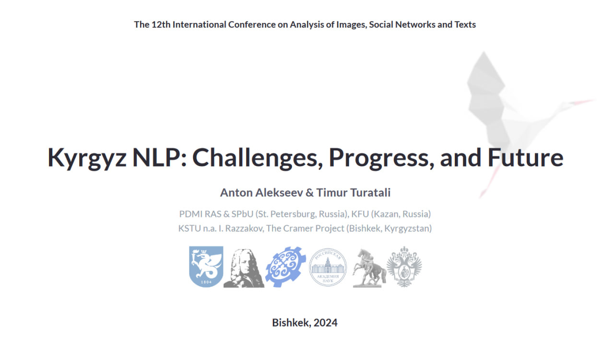

KyrgyzNLP: Browsing, Bibliography, and Scientometrics
This is a webpage accompanying the talk
KyrgyzNLP: Challenges, Progress, and Future
given on October 18th, 2024 at the
AIST-2024
conference.
KyrgyzNLP Bibliography Browser
Co-authorship Graph
